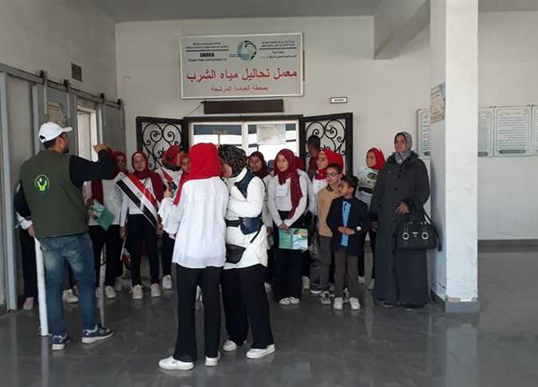

التربوي
نيرة خالد - هاجر يونس - ياسمين ياسر - مهرائيل عادل - روان ماهر
مياة الشرقيه تنظم حملات توعوية لطلاب المدارس بالمحافظة

وفي هذا السياق، نظمت شركة مياه الشرب والصرف الصحي بالشرقية زيارة لطلاب مدرسة أولاد سالم للتعليم الأساسي بمركز ومدينة أبوحماد إلى محطة مياه العباسة المرشحة للتعرف على مراحل تنقية مياه الشرب، وتم استعراض مراحل التنقية وتفقد المعامل، حيث تم عرض آلية رفع عينات المياه بكل مرحلة وأهم المشاكل التي تواجه عمليات التنقية، تم عقد ندوات توعوية للطلبة واستعراض جهود الشركة، وأهمية التنقية السليمة لمياه الشرب بغرض توصيل كوب مياه نظيف للمواطنين.وفي هذا السياق، نظمت شركة مياه الشرب والصرف الصحي بالشرقية زيارة لطلاب مدرسة أولاد سالم للتعليم الأساسي بمركز ومدينة أبوحماد إلى محطة مياه العباسة المرشحة للتعرف على مراحل تنقية مياه الشرب، وتم استعراض مراحل التنقية وتفقد المعامل، حيث تم عرض آلية رفع عينات المياه بكل مرحلة وأهم المشاكل التي تواجه عمليات التنقية، تم عقد ندوات توعوية للطلبة واستعراض جهود الشركة، وأهمية التنقية السليمة لمياه الشرب بغرض توصيل كوب مياه نظيف للمواطنين.وفي هذا السياق، نظمت شركة مياه الشرب والصرف الصحي بالشرقية زيارة لطلاب مدرسة أولاد سالم للتعليم الأساسي بمركز ومدينة أبوحماد إلى محطة مياه العباسة المرشحة للتعرف على مراحل تنقية مياه الشرب، وتم استعراض مراحل التنقية وتفقد المعامل، حيث تم عرض آلية رفع عينات المياه بكل مرحلة وأهم المشاكل التي تواجه عمليات التنقية، تم عقد ندوات توعوية للطلبة واستعراض جهود الشركة، وأهمية التنقية السليمة لمياه الشرب بغرض توصيل كوب مياه نظيف للمواطنين.وفي هذا السياق، نظمت شركة مياه الشرب والصرف الصحي بالشرقية زيارة لطلاب مدرسة أولاد سالم للتعليم الأساسي بمركز ومدينة أبوحماد إلى محطة مياه العباسة المرشحة للتعرف على مراحل تنقية مياه الشرب، وتم استعراض مراحل التنقية وتفقد المعامل، حيث تم عرض آلية رفع عينات المياه بكل مرحلة وأهم المشاكل التي تواجه عمليات التنقية، تم عقد ندوات توعوية للطلبة واستعراض جهود الشركة، وأهمية التنقية السليمة لمياه الشرب بغرض توصيل كوب مياه نظيف للمواطنين.